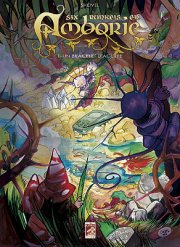
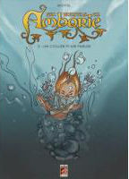
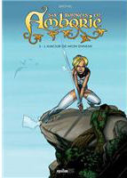

Il y a deux ans, je profitais de la fin du festival de BD l'Angoulême pour vous parler de la grande aventure de la bande dessinée réunionnaise. Après une présentation du Margouillat, je souhaitais encore beaucoup d’albums réunionnais dans les bacs pour les années à venir. Deux ans après, un nouvel auteur présente un album Réunionnais sorti chez un éditeur Réunionnais: Epsilon. Il s’agit de Shovel Tattoos.
 Un bracelet d’Agliffe (album présenté ici)est le premier tome d’une série qui devrait en comporter six. Dans sa saga Six runkels en Amborie, Shovel Tattoos nous emmène dans un univers fantastique dont la porte d’entrée est un trou dans le cirque de Salazie. C’est en essayant de retrouver son mobile qu’un gamin de 12 ans va se retrouver entrainé dans cet univers underground.
Shovel Tattoos, l’auteur est Picard de naissance mais vit à la Réunion depuis 10 ans. Shovel Tattoos, c’est un pseudo évidemment, avec sa barbe et ses tatouages, on le croit directement sortit d’un album de Litteul Kévin, de son ami Coyote. Dans le civil, il s’appelle Mario Sénéchal et il est aussi tatoueur et enseignant. Sur la toile, il est Shovel et anime son blog avec vidéos, photos et comptes-rendus de dédicaces.
Pour compléter mon article hivernal, je vous propose aussi de faire un tour sur le site de l’Éditeur en question: Epsilon. Petit éditeur réunionnais qui liste son catalogue en une page: albums jeunesse, bandes dessinées, livres de cuisine ou guides pratique, tous les titres dégagent une bonne odeur d’Océan Indien d’entre leurs pages.
Si ce catalogue ne vous suffit pas, allez donc faire un tour sur Livranoo, Cette librairie en ligne (maintenant hors ligne) est spécialisée dans la littérature de la Réunion. Elle est d’ailleurs basée à la Réunion, mais elle offre aussi la livraison en France continentale et en Corse. On retrouve dans ses pages, les livres que je vous ai déjà présenté et plein d’autres que je vous présenterais peut-être un autre jour sur Reunionweb.
Six Runkels en Amborie - Tome 01
Bande dessinée | cartonné | Epsilon BD | avril 2007
Jean-Michel, Doquiane et Brib escortés par le hazel, atteignent la porte du Lem-Mhy et le village naïul. Jean-Michel se voit offrir un bracelet aux pouvoirs magiques, qui facilitera son entrevue avec maître Jean…
{% fnac "Amborie01", "https://livre.fnac.com/a2524646/Six-Runkels-en-Amborie-Tome-01-Six-runkels-en-Amborie-T01-Un-bracelet-d-Agliffe-Shovel" %}

Six Runkels en Amborie - Tome 02
Bande dessinée | cartonné | Epsilon BD | janvier 2009
Jean Michel, devenu maître Jean depuis son passage en Amborie, poursuit sa lutte contre Havorn en compagnie de Brib, Doquiane et du hazel, tout en cherchant un moyen de rejoindre son monde.
{% fnac "Amborie02", "https://livre.fnac.com/a2524648/Six-Runkels-en-Amborie-Tome-02-Six-runkels-en-Amborie-T02-Un-collier-pour-parler-Shovel" %}

Six Runkels en Amborie - Tome 03
Bande dessinée | cartonné | Epsilon BD | janvier 2009
« On peut invoquer des légions entières, déplacer des mondes, créer des espèces et les dominer ! Bref, c’est un chouette bouquin ! »
{% fnac "Amborie03", "https://livre.fnac.com/a2524649/Six-Runkels-en-Amborie-Tome-03-Six-runkels-en-Amborie-T03-L-amour-de-mon-ennemi-Shovel" %}